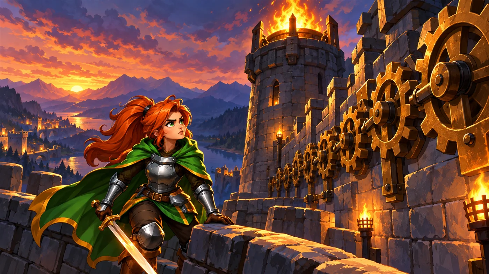
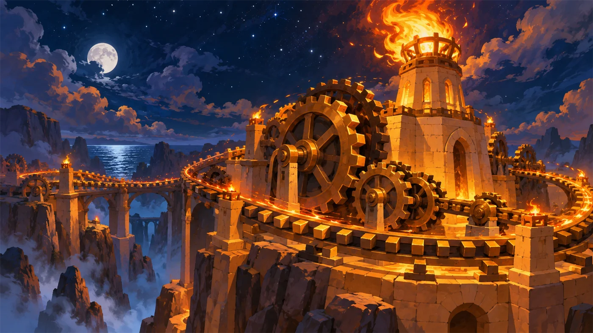
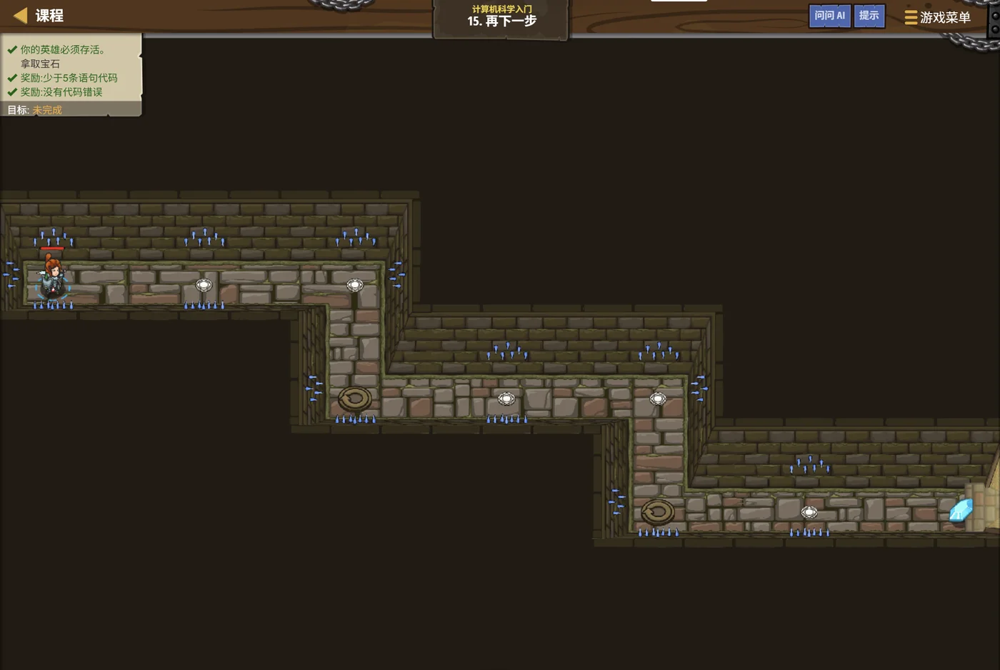
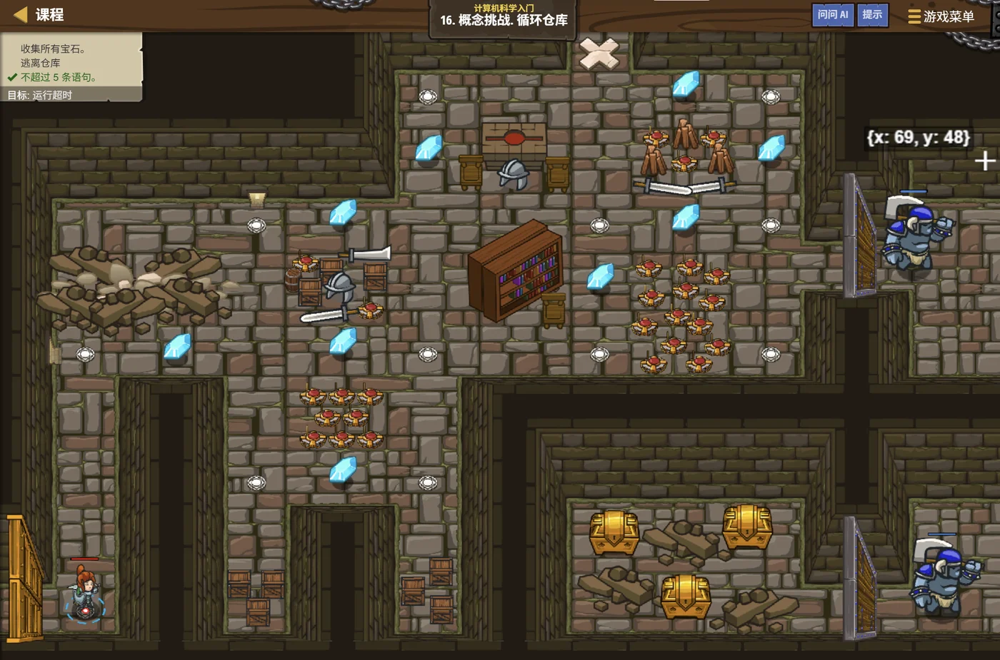
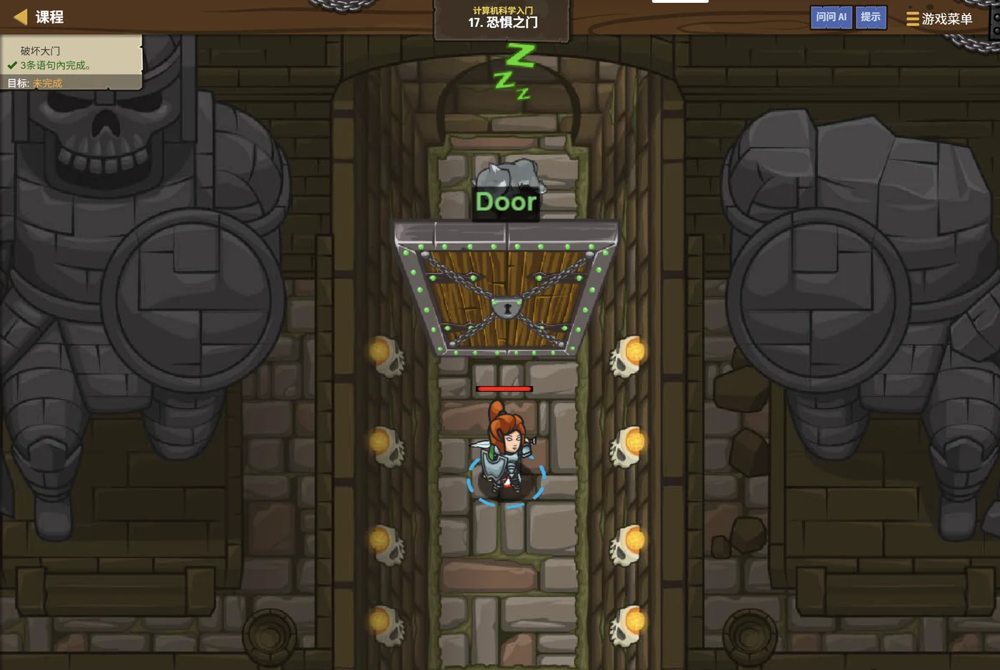

故事：地牢的石门在身后轰然合拢。走廊很长，"右—下—右—下"的节奏要一遍遍重复，
可你根本数不清要走多少遍——有些路段藏在地图的黑暗里，光靠眼睛看不出来。
这一关还藏着一个额外挑战：只能用 4 条语句过关。（空行和注释不算行数，但一行里写多个语句要算。）
这下可没法"一步一行"地硬写了。
扣哒考级 · GESP PYTHON 一级 · 第 6 单元 | 烛火岗哨 CANDLEWATCH OUTPOST
永不熄的齿轮 循环结构：重复执行的力量
Loops — The Power of Doing It Again and Again

安雅
红发队长 · 你的旅伴
走出暗影地牢的第三天，你跟着安雅来到了烛火岗哨。这座哨站的塔顶燃着一簇永不熄灭的火，
而驱动它的，是一整排咬合在一起、昼夜不停地转动的齿轮。
看清楚了吗？安雅把一支火把插进墙壁，它不累，因为它只做一件事——转。一圈，再一圈。 你写代码也该这样：别傻乎乎地把同一行抄一百遍，告诉程序"重复做"就行了。
看清楚了吗？安雅把一支火把插进墙壁，它不累，因为它只做一件事——转。一圈，再一圈。 你写代码也该这样：别傻乎乎地把同一行抄一百遍，告诉程序"重复做"就行了。
安雅 · 红发队长
这一关我陪你走。记住三句话：循环体是你要重复做的事，条件是它什么时候该停，出口是它凭什么停下来。
想不明白也没关系，先往下看——岗哨的齿轮会教你。

py-L1-06-01_outpost_arrival.webp
【配图待补】黄昏的烛火岗哨：砂岩哨塔顶燃着一簇永不熄灭的火焰，塔身外挂着一整排咬合转动的青铜齿轮；安雅在门口向新兵招手，新兵怀里抱着一卷图纸。
0 单元导语与目标
Unit Overview
0.1 学习目标
1学完这个单元，你将能……
- 说清"循环"是什么，以及它能解决什么问题
- 用
while与while True写出会重复执行的程序 - 用
for与range()精确重复固定次数 - 在循环内部嵌套分支，一边巡逻一边判断
- 用
break与continue控制循环的进出 - 独立完成 GESP 一级中所有循环类题目
2对标 GESP 考纲（Python 一级）
- （7）了解程序的顺序结构、选择结构、循环结构
- （5）理解并掌握"输入、处理、输出"程序编写方法
- （11）掌握输入输出语句 input 和 print
- （9）掌握比较运算符、算术运算符、逻辑运算符
- 考核目标：完成包含分支语句、循环语句的综合案例
0.2 考纲对照与前置知识
本单元是"三大基本结构"三部曲的最后一块拼图。在它之前，你已经走过两段路：
| 顺序 | 单元 | 核心问题 | 岗哨里的场景 |
|---|---|---|---|
| ① | 第 4 单元 · 潮汐升降梯 | 事情按什么次序发生？ | 升降梯一层一层往上走 |
| ② | 第 5 单元 · 岔路口的抉择 | 这一步该不该做？ | 看到敌人就打，没有就绕开 |
| ③ | 第 6 单元 · 永不熄的齿轮 | 同一件事要做很多遍怎么办？ | 齿轮转一整夜，哨火不灭 |
前置检查：如果
print()、input()、if / else 的写法你还有点陌生，
建议先回到第 4、5 单元热个身。循环，本质上就是"把已经会做的事情，重复很多次"。
1 为什么要循环
Why We Need Loops
1.1 永不熄的齿轮
岗哨的塔顶有一排齿轮，每个齿都一样大。它们整天做的事只有一件：咬住下一个齿，转过去。 正是这一件重复到极致的小事，让哨火燃烧了整整一百年。
图 2（SVG）：齿轮的启示——重复一件小事，坚持一百年
现在把它换成你的代码：如果哨站外墙有 12 个火把要依次点亮，而你不知道该怎么"重复"，你只能这样写：
笨办法：点亮 12 个火把
Python
hero.buildXY("fire-trap", 10, 34)
hero.buildXY("fire-trap", 16, 34)
hero.buildXY("fire-trap", 22, 34)
hero.buildXY("fire-trap", 28, 34)
# …… 还要再写 8 行，而且坐标得自己一个个数这段代码暴露了"一行一步"的两个致命问题：
第一，太啰嗦。12 个火把写 12 行，100 个就得写 100 行。岗哨的墙再长一点，你的手就先断了。
第二，更要命的是——你有时候根本不知道要重复多少次。 比如"一直往前走，直到碰壁为止"，碰壁前到底有多少格？没人告诉你。
程序员的答案很优雅：不要描述"做几次"，而是描述"做到什么条件为止"。 只要把"重复这件事"本身写成一条指令，剩下的交给计算机去数——这就是循环（Loop）。
一句话记忆：循环 = 让计算机"照着同一套动作反复执行"，直到你喊停、或它自己走到终点。
1.2 循环的三要素
图 3（SVG）：循环三要素——进入条件、循环体、回到条件再判断
看虚线那条箭头：执行完循环体后，程序会回到条件处再问一次。 只要条件还成立，就再来一轮；一旦不成立，循环结束，程序继续往下走。三样东西缺一不可：
| 要素 | 作用 | 岗哨里的例子 |
|---|---|---|
| 循环条件 | 决定"还要不要再来一轮" | 哨火还亮着吗？ |
| 循环体 | 每一轮真正做的事 | 齿轮转过一格 |
| 退出时机 | 什么时候跳出循环 | 火把点完了 / 天亮了 |
安雅 · 红发队长
塔顶那排齿轮，转了整整一百年，从来没人给它数过圈数。它不累，因为它只做一件事——转。转完一圈，再来一圈。
你也一样：把那些"要重复很多遍"的活儿交给循环，自己去喝口水。
2 while：只要……就一直做
The while Loop
2.1 while 与 while True
while 的读法是"当……时，重复做"。
在扣哒世界的地牢关卡"再下一步"里，你会反复看到一种最简单、也最霸道的写法：
再下一步 · 参考解法
Python
# 走廊很长，"右—下"的节奏要一直重复
while True:
hero.moveRight()
hero.moveDown()True 的意思是"永远为真"，所以这个循环不会因为条件不成立而结束——
它会一遍又一遍地执行"右、下"，直到英雄撞上地牢的墙，或走完整条走廊。
注意：在关卡里，
while True 靠"关卡结束"自然收场；
但在真正的程序里，没有出口的循环就是死循环，会让程序卡死。
写循环时永远先问一句：它凭什么停下来？
2.2 会自己停下的 while
更常见的写法是给 while 配一个真·条件，让它自己判断什么时候收工：
循环仓库 · 参考解法
Python
# 只要"视野里还有宝石"，就一直去捡
item = hero.findNearestItem()
while item:
hero.moveXY(item.pos.x, item.pos.y)
item = hero.findNearestItem() # 捡完一颗，重新找下一颗关键 循环体第二行必须重新找一次，否则英雄会原地反复横跳
关键细节：注意循环体里的第二行——它必须重新获取一次
item。
否则 item 永远是第一颗宝石，条件永远成立。
循环体里必须有"让条件终有一天不成立"的动作，这是写出正确循环的核心心法。
图 4（SVG）：while True 与 while 条件的执行节奏差异
| 写法 | 何时使用 | 扣哒世界里的场景 | 风险 |
|---|---|---|---|
while True: | 不知道要重复几次，交给关卡自己结束 | 再下一步、闹鬼的迷宫 | 忘记设置出口会死循环 |
while 条件: | 重复次数由"数据"决定（如还有几颗宝石） | 循环仓库、宝石收集类关卡 | 循环体里忘记更新条件 |

py-L1-06-02_eternal_gear.webp
【配图待补】巨大的青铜齿轮组驱动灯塔般的永恒火焰，齿轮咬合形成闭环，暖橙色火光映在砂岩上，画面带运动弧线。
娜莉亚 · 翠羽射手
我练箭的时候，师父让我把同一个动作重复一千次。我问他为什么。他说："因为战场上，你只有一次机会。"
循环，就是那双替你练一千次的手。它不会烦，也不会累——这一点比你我都强。
3 for：重复固定的次数
The for Loop
3.1 for 与 range()
如果"重复几次"你心里有数——比如"向右走 4 格"——用 for 更干净：
向右走 4 格
Python
# 重复 4 次：向右一步
for i in range(4):
hero.moveRight()OUTPUT 英雄向右连续移动 4 格；i 依次取值 0 → 1 → 2 → 3
3.2 range 的四种写法
range() 是 for 循环的"计数器工厂"，它最常用的四种写法如下（全部是高频考点）：
| 写法 | 产生的序列 | 循环次数 | 典型用途 |
|---|---|---|---|
range(5) | 0, 1, 2, 3, 4 | 5 次 | 固定次数重复 |
range(2, 6) | 2, 3, 4, 5 | 4 次 | 从某个数开始 |
range(0, 20, 3) | 0, 3, 6, 9, 12, 15, 18 | 7 次 | 每隔几个取一个（步长） |
range(-10, 0) | -10, -9, …, -1 | 10 次 | 从负数开始 |
记牢一句话：range(a, b) 包含 a，不包含 b。
range(1, 5) 得到的是 1、2、3、4 共 4 个数——少算或多算一次，是最常见的失分点。
图 6（SVG）：range(1, 5) 为什么只有 4 个数
计数循环的四个要素
Python 的 for i in range(n) 看起来只有一行，其实暗含了四件事：
| 要素 | 含义 | 在 range(4) 中的体现 |
|---|---|---|
| ① 初始化 | 计数器从几开始 | 从 0 开始 |
| ② 条件 | 还要不要再来一轮 | 计数器小于 4 |
| ③ 循环体 | 每轮要做什么 | 缩进的那几行 |
| ④ 步进 | 每轮结束后计数器怎么变 | 每次 +1 |
4 循环里做判断
Branching Inside a Loop
4.1 循环 + 分支嵌套
真正的巡逻不会只有"往前走"。岗哨外会冒出食人魔，路中间会横着尖刺—— 这意味着你需要在每一轮循环里都做一次选择，这就是循环与分支的嵌套：
恐惧之门 · 参考解法
Python
# 每一轮：先看看有没有敌人
while True:
enemy = hero.findNearestEnemy()
if enemy: # 有敌人 → 打
hero.attack(enemy)
else: # 没敌人 → 继续前进
hero.moveRight()图 7（SVG）：外层 while 管"一直做"，内层 if / else 管"这一轮做什么"
结构读法：外层
while 管"一直做"，
内层 if / else 管"这一轮做什么"。
注意缩进——if 比 while 多缩进一层，它才属于循环体内部。
4.2 积木是怎么摆的
如果你之前在扣哒世界的少年版里玩过，那套内容在屏幕上呈现的是模块化的积木。 积木和 Python 代码说的其实是同一件事——下面这张对照图，帮你把两边连起来：
图 8（SVG）：少年版积木与 Python 代码的对应关系——形状不同，逻辑完全一致
5 循环的两个"刹车"
break & continue
5.1 break：立刻收工
金币攒够就走人
Python
# 一路向右走，金币攒够 20 枚就立刻收工
while True:
hero.moveRight()
if hero.gold >= 20:
break # 跳出整个循环，不再走
hero.say("收工！") # break 之后，程序从这里继续break 的意思是：不管循环条件还剩多少轮，现在就跳出去，直接执行循环后面的代码。
5.2 continue：跳过这一轮
清点火把 · 跳过错位的
Python
# 依次清点 1~10 号火把，跳过 3 的倍数（那些位置被尖刺占了）
for i in range(1, 11):
if i % 3 == 0:
continue # 本轮到此为止，直接看下一号
hero.say(i) # 报告安全编号
# 输出：1 2 4 5 7 8 10图 9（SVG）：break 跳出去，continue 跳过去
| 关键词 | 作用范围 | 一句话区别 | 岗哨里的用法 |
|---|---|---|---|
break | 跳出整个循环 | "我不干了" | 金币攒够、哨火已点亮 |
continue | 跳过本轮剩余代码 | "这轮不算，下一轮" | 这一格有尖刺，跳过 |
易错点：在嵌套循环里，
break 只会跳出最内层的那一个循环，
外面那层照样继续转。理解这一点，是 GESP 高年级"多层循环"题目的常考点。
py-L1-06-03_patrol_result.webp
【配图待补】夜色中的哨站外墙，一整排火把被依次点亮，英雄沿墙巡逻，脚下是同一步伐重复出的发光轨迹。
6 三大结构总对照
The Three Basic Structures
到这里，"三大基本结构"就集齐了。这张表请务必记牢——它几乎是 GESP 一级到三级所有编程题的骨架：
| 结构 | 解决问题 | 少年版积木 | Python |
|---|---|---|---|
| 顺序 | 按次序执行 | 积木从上到下拼 | 一行一行写 |
| 分支 | 该不该做 | 如果…那么…否则… | if / elif / else |
| 循环 | 重复做很多遍 | 重复执行 / 重复执行直到 | while / for |
图 11（SVG）：顺序、分支、循环——三种结构撑起所有程序

贺舒曼 · 镜中先知
你们在岗哨里转了一晚上齿轮，现在该把它想清楚了。循环的本质，是用"规律"代替"重复"。凡是你能说出"重复什么"和"什么时候停"的地方，循环就能替你干活。 你们接下来会遇到的所有算法——枚举、模拟、查找、排序、动态规划——骨子里都是循环。 这个单元，是整个 GESP 考纲最基础、也最重要的一块砖。
7 关卡实战
Level Practice
下面三个关卡都能在扣哒世界里直接找到。先读懂故事与思路，再进关卡亲手打一遍——代码写在纸上永远学不会，写在关卡里才会。
图 12（SVG）：岗哨俯视图——巡逻路线就是一段循环
关卡一
再下一步
进入关卡 →
assets/stages/py-L1-06-stage1_nextstep.webp
【关卡截图位】请把《再下一步》的游戏画面截图放到此处（放入 assets/stages/ 目录，文件名为 py-L1-06-stage1_nextstep.webp）。
思路：看上面的关卡实况——"右—下"的节奏要重复很多遍， 那就别写 10 行 20 行，把这两步装进一个循环，让英雄自己一直走下去。
重点示例：把重复动作装进循环
Python
while True:
hero.moveRight(2)
hero.moveDown()要点 循环体里只有两行，但它们会被执行无数次
关卡二
循环仓库
进入关卡 →
故事：穿过一条窄廊，你闯进了食人魔的仓库。里头宝石堆成小山，
可巡逻的守卫来回走动——你完全没法提前规划一条固定路线。
但你很快发现了破绽：仓库的布局是有规律的。 只要找到那个"绕圈子的节奏"，闭着眼睛都能走完全程。
但你很快发现了破绽：仓库的布局是有规律的。 只要找到那个"绕圈子的节奏"，闭着眼睛都能走完全程。

assets/stages/py-L1-06-stage2_loop_warehouse.webp
【关卡截图位】请把《循环仓库》的游戏画面截图放到此处（放入 assets/stages/ 目录，文件名为 py-L1-06-stage2_loop_warehouse.webp）。
关键：看上面的关卡实况——宝石撒了一圈，巡逻守卫来回走，
但布局是有规律的。把"绕一圈"的四个动作写进循环，转完一圈正好回到起点，
于是这一圈可以无限重复，宝石自然就被一路收走了。
这一关同样限制：不超过 5 条语句。
重点示例：一条能绕回原点的路线
Python
while True:
hero.moveUp(2)
hero.moveRight(2)
hero.moveDown()
hero.moveLeft()要点 上 2 → 右 2 → 下 1 → 左 1，正好绕回原地
找规律的小窍门：先在纸上把路线画一遍，看看它是不是"每个方向走几格、然后回到原点"。
只要是闭环，就能用循环一直转下去。
关卡三
恐惧之门
进入关卡 →
故事：走廊尽头立着一扇巨大的石门，门后藏着满满的宝箱。
你举剑劈了一下——门纹丝不动。第二下、第三下……
这扇门特别结实，得砍上很多很多次。数得清吗？数不清。 那就干脆别数了——让程序替你重复。
这扇门特别结实，得砍上很多很多次。数得清吗？数不清。 那就干脆别数了——让程序替你重复。

assets/stages/py-L1-06-stage3_fear_door.webp
【关卡截图位】请把《恐惧之门》的游戏画面截图放到此处（放入 assets/stages/ 目录，文件名为 py-L1-06-stage3_fear_door.webp）。
思路：看上面的关卡实况——门特别结实，得砍很多很多次，根本数不清。 那就干脆别数了，把"攻击"放进循环，让英雄一直砍，砍到门倒下为止。
重点示例：循环体里放什么都可以
Python
while True:
hero.attack("Door")要点 循环体里可以放任何方法——不只是移动，攻击也照样行
三关连起来看：
再下一步用循环"走路"，循环仓库用循环"绕圈收宝石"，恐惧之门用循环"砍门"。
循环并不关心你在重复什么，它只负责"一直再来一遍"。
去扣哒世界闯这一关 →
补充知识：知道要重复几次时，用 for 循环更利落
上面三关用的都是 while True——当你不知道要重复几遍时，它最省心。
但如果"重复次数"你心里有数（比如明确要走 5 步），Python 还有一种更清爽的写法：
for 循环长什么样
Python
# 重复 4 次：向右走一步
for i in range(4):
hero.moveRight()OUTPUT 英雄向右连续移动 4 格；i 依次取值 0 → 1 → 2 → 3
一句话区分：
次数已知 → 用
下次再看到"走过 6 格路"这种题目，别再写
for；次数未知 → 用 while。下次再看到"走过 6 格路"这种题目，别再写
while True 了。
8 常见陷阱
Common Pitfalls & Debugging

扣哒鸭 · 调试官
我是这座岗哨里唯一会读报错的人。等下我要是说话难听，那说明你的 bug 更难听。
先把这五条刻进脑子里，能省下你今晚所有的火把。
1
缩进不对，代码不在循环里。下面这段只走了一步：
for i in range(4):hero.moveRight() ← 没缩进
扣哒鸭：Python 靠缩进认亲。你把
moveRight() 放到了循环外面，
它当然只走一次。想让谁跟着循环转，就往右缩进四个空格。就这么简单，别再来找我。正确写法：把循环体整体多缩进一层
2
条件永远为真（死循环）。循环体里忘了重新获取目标：
while item: 之中只有 hero.moveXY(...)，没有再调用
findNearestItem()。
扣哒鸭：英雄在同一个位置反复横跳，看着挺努力，其实是瞎转。
循环体里必须有一行动作能推动条件往前挪——捡完一颗就重新找一次。
记住这句：不推进条件的循环，等于耍赖。
正确写法：在循环体末尾补上
item = hero.findNearestItem()3
break 写错层级。把
break 写在了 if 外面，
导致第一轮就直接跳出整个循环。
扣哒鸭：
break 站错了队。
它得待在 if 里面，条件成立时才跳；放在外面，第一轮就跑了。
缩进决定它听谁的命令，别让它自作主张。正确写法：把
break 缩进到 if 的语句块内4
把 while True 当万能钥匙。次数明明已知（走 6 格），却还是写
while True。
扣哒鸭：知道走 6 格还写
while True，你是打算走到天荒地老吗？
次数已知就用 for i in range(6)——一眼看清，也不容易出错。
只有"不知道要几轮"的时候，才轮到 while True 上场。正确写法：用
for i in range(6): 替代5
循环变量用完就丢。循环结束后还想用
i，却不知道它停在哪个值。
比如 for i in range(10) 之后，i 是 9 而不是 10。
扣哒鸭：
range(10) 只给你 0 到 9。
循环跑完，i 就停在最后一个值 9，不会自动变成 10。
想数次数就另开一个计数器，别指望循环变量替你记账。正确写法：用单独的
cnt += 1 统计次数，避免依赖循环变量的终值9 题目练习
Practice
下面 6 道题中，前 5 道改编自 CCF GESP 历年真题（情境已改写成扣哒世界的故事，考点完全一致）， 第 6 道为原创拓展题。先自己动手做，再点开看详解。
改编自 2026 年 9 月 · Python 一级 · 第 8 题单选题
岗哨的换岗钟每敲一次，哨兵就记录一次。下列代码执行后，其输出是（ ）。
1 cnt = 0 2 for i in range(10): 3 cnt += 1 4 print(i, cnt)
A.10 10 B.9 9 C.10 9 D.9 10
查看答案与详解
答案：D。
易错点：很多人会以为循环结束时
对应单元：第 3 节 · range 的四种写法。
range(10) 产生 0~9 共 10 个数，
循环结束时 i 停留在最后一个值 9，而 cnt 累加了 10 次，是 10。易错点：很多人会以为循环结束时
i 等于 10，其实 range 的终点是"取不到"的。对应单元：第 3 节 · range 的四种写法。
改编自 2026 年 9 月 · Python 一级 · 第 9 题单选题
矿坑里的矿车编号从 -10 号排到 -1 号（负号表示地下层）。下列代码执行后，其输出是（ ）。
1 cnt = 0 2 for i in range(-10, 0): 3 cnt += 1 4 print(i * cnt)
A.-10 B.-9 C.0 D.9
查看答案与详解
答案：A。
易错点：这类题必须"跑"到最后一步再算，中途推演容易算错。
对应单元：第 3 节 · range 的四种写法。
range(-10, 0) 产生 -10 到 -1 共 10 个数。
循环结束时 i = -1、cnt = 10，于是 i * cnt = -1 × 10 = -10。易错点：这类题必须"跑"到最后一步再算，中途推演容易算错。
对应单元：第 3 节 · range 的四种写法。
改编自 2026 年 9 月 · Python 一级 · 第 10 题单选题
哨塔每天有 4 轮巡查，遇到"禁行"的轮次就跳过，遇到"晴天"就出勤后收工。下列代码执行后，其输出是（ ）。
1 for i in range(1, 5): 2 if i % 3 == 0: 3 print(i, end = "+") 4 continue 5 else: 6 print(i, end = "-") 7 break 8 print(i, "END", end = "#")
A.1-1 B.1+1 END# C.1+1-2-2 END# D.1-1 END#
查看答案与详解
答案：D。逐轮推演：
i=1：
此时
关键：
对应单元：第 5 节 · break 与 continue。
i=1：
1 % 3 == 0 不成立 → 走 else，输出 1- → 然后执行 break，跳出循环。此时
i 仍为 1，最后一行输出 1 END#。合计 1-1 END#。关键：
break 位于 if-else 之外，只要没被 continue 跳过，第一轮就会结束整个循环。对应单元：第 5 节 · break 与 continue。
改编自 2026 年 9 月 · Python 一级 · 判断题第 3 题判断题
下面代码执行后将输出 20。（ ）
1 for i in range(0, 20, 3): 2 if i % 3 != 0: 3 continue 4 print(i)
查看答案与详解
答案：错误（×）。
易错点：看到 continue 就以为会跳过，要看条件是否可能成立。
对应单元：第 5 节 · continue。
range(0, 20, 3) 产生 0, 3, 6, 9, 12, 15, 18——
它们全部都是 3 的倍数，所以 i % 3 != 0 永远不成立，continue 一次都不会执行。
程序会依次打印 0 3 6 9 12 15 18，而不是 20。易错点：看到 continue 就以为会跳过，要看条件是否可能成立。
对应单元：第 5 节 · continue。
改编自 2026 年 9 月 · Python 一级 · 编程题 2编程题
题目描述
岗哨的守夜规矩是这样的：第 1 夜点亮 1 支火把；第 2 夜点亮 2 支；之后每一夜都要点亮前一夜的两倍。 请问连续 n 夜，一共点亮了多少支火把？
输入格式：一行，一个整数 n。
输出格式：一行，一个整数，表示前 n 夜点亮的火把总数。
| 输入样例 | 输出样例 | 说明 |
|---|---|---|
| 3 | 7 | 1 + 2 + 4 = 7 |
| 10 | 1023 | 1 + 2 + 4 + … + 512 = 1023 |
查看参考程序与详解
n = int(input())
f, ans = 1, 0 # f：今夜的火把数；ans：总数
for i in range(n):
ans += f # 累加今夜
f *= 2 # 下一夜翻倍
print(ans)
思路：这是"递推 + 循环累加"的经典模型。第 k 夜的火把数是 2k-1，一边翻倍一边累加即可。
易错点：循环只能跑 n 次（range(n)），不能多算一夜；f 与 ans 的更新顺序不能颠倒。
对应单元：第 3 节 · for 与 range；第 4 节 · 循环 + 判断。
原创拓展题单选题
哨兵要在 1~20 号火把中，把编号能被 4 整除的火把全部跳过不点。执行下面代码后，一共点亮了多少支火把？（ ）
1 cnt = 0 2 for i in range(1, 21): 3 if i % 4 == 0: 4 continue 5 cnt += 1 6 print(cnt)
A.15 B.16 C.17 D.20
查看答案与详解
答案：A。1~20 共 20 个数，其中 4 的倍数有 4、8、12、16、20 共 5 个被
解法二（推荐）：把
对应单元：第 3 节 · range 边界；第 5 节 · continue。
continue 跳过。
所以点亮的数量是 20 − 5 = 15。解法二（推荐）：把
cnt 当成"实际点亮数"的计数器，循环结束后直接输出即可——这也是最容易写对的方式。对应单元：第 3 节 · range 边界；第 5 节 · continue。
10 本单元小结
Unit Summary
你在这座岗哨里收获了什么
- 循环的本质——描述"重复的方式"，而不是"重复几次"；三要素：条件、循环体、退出时机。
- while——"只要……就一直做"。
while True用于次数未知的场合，必须想清楚出口。 - for + range——"重复固定次数"的最佳选择，四种常见 range 写法要记牢（含步长与负数区间）。
- 循环 + 分支嵌套——每一轮都做一次选择，这是真实程序最常见的骨架。
- break / continue——一个"我不干了"，一个"这轮不算"；注意嵌套时的作用范围。
- 三大基本结构——顺序、分支、循环，GESP 一级的核心考点全部集齐。